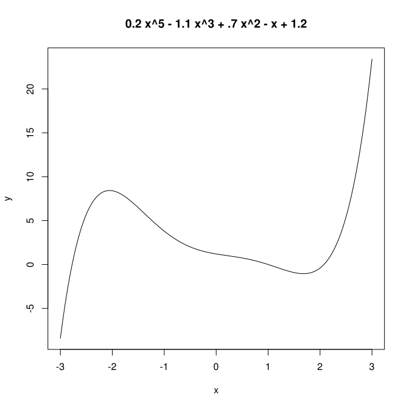

Cette page reprend des éléments du cours : algorithmes et graphiques.
Le perceptron
descente de gradient stochastique : minimisation d'une fonction
.
La fonction que l'on a minimisée :

descente de gradient stochastique : calcul des poids d'un perceptron
.
calcul des poids d'un perceptron pour séparer deux classes
.